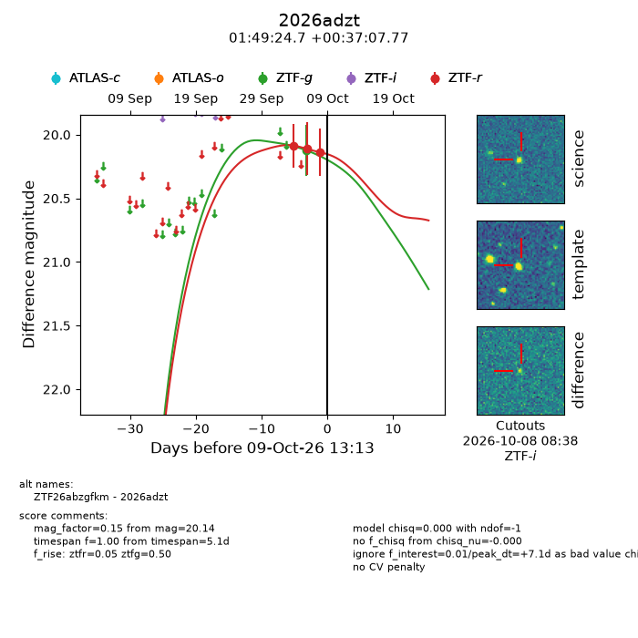
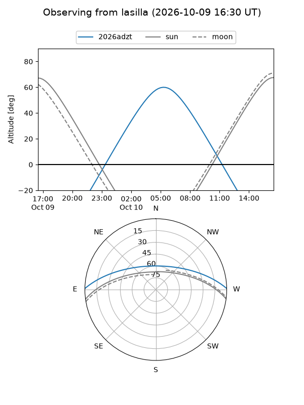
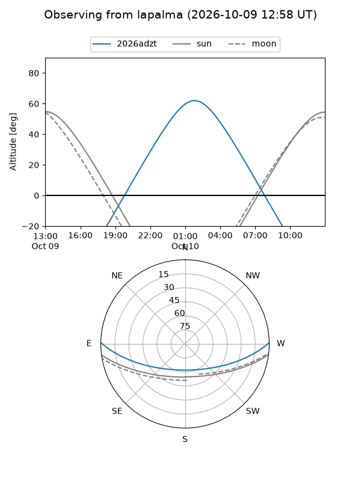
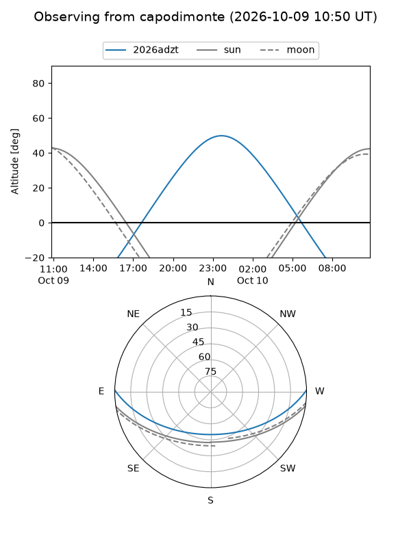
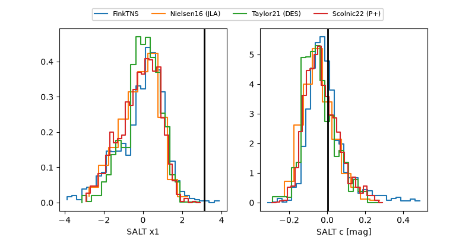

2026adzt
Target 2026adzt at 2026-10-09 13:16
Aliases and brokers:
FINK-ZTF: ztf.fink-portal.org/ZTF26abzgfkm
Lasair-ZTF: lasair-ztf.lsst.ac.uk/objects/ZTF26abzgfkm
ALeRCE-ZTF: alerce.online/object/ZTF26abzgfkm
YSE-PZ: ziggy.ucolick.org/yse/transient_detail/2026adzt
TNS name: wis-tns.org/object/2026adzt
Direct TNS query: direct search
alt names
ZTF26abzgfkm (ztf,fink_ztf)
2026adzt (tns,yse)
Coordinates:
equatorial (ra, dec) = 27.3530,+0.61882
equatorial (HMS+DMS) = 01:49:24.72,+00:37:07.77
galactic (l, b) = (151.9542,-58.94695)
Flags:
peak dt: +7.1
Photometry:
last ztfg=20.12, ztfr=20.14
1 ztfg, 3 ztfr detections
Lightcurve

Visibility



Additional plots
